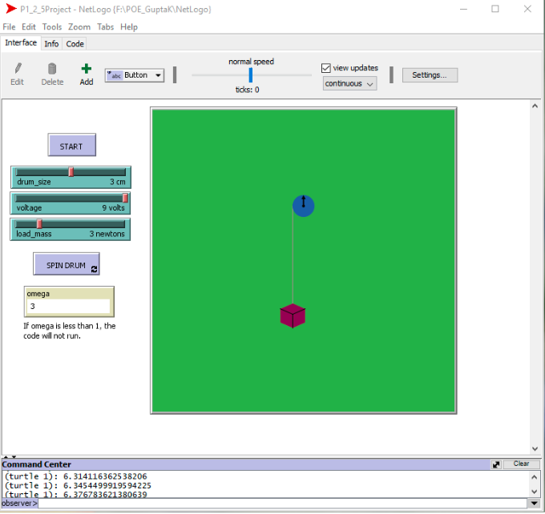
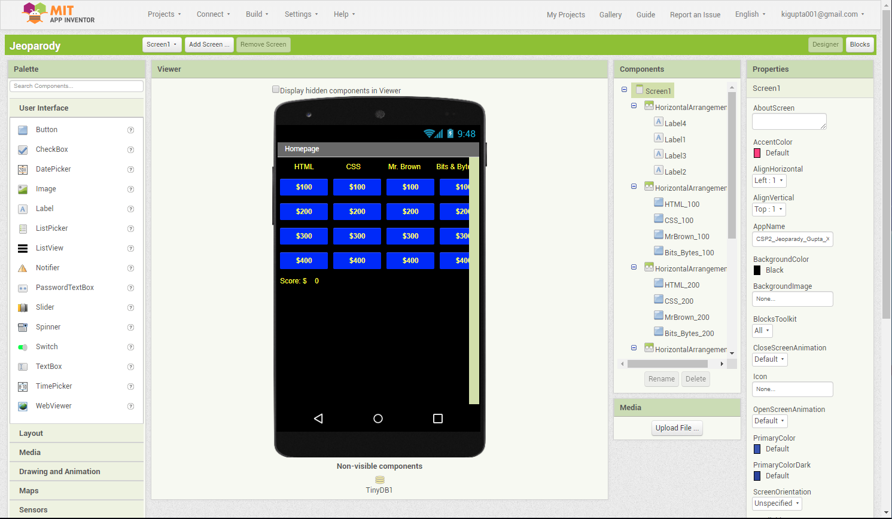

Khushi Gupta's Engineering Portfolio
Hello! I am currently a junior in Dublin High School. My interest in engineering started...
About Me
I work towards my goal of furthering my knowledge in electrical engineering and computer science through involving myself in programs such as the engineering academy(DEDA) and taking classes such as Computer Information Systems at my local community college. In addition, I try to delve into the world of engineering through a multitude of extracurricular programs: Chicktech, Technovation, The Congressional App Challenge, my schools Mentorship Program, and the Alameda County Science Fair. With a few peers of mine, I am working to create an app to streamline the volunteer process in my school. I volunteer at the Alameda County Library as an Ebook helper to assist seniors in using the digital apps Libby, Overdrive, and RB Digital as well as troubleshooting any problems. I am also an engineering peer tutor for the engineering academy to aid my peers in any questions they may have in their projects during lunch. I enjoy working on and brainstorming applications in my freetime and hope to release my own application in the future.
I like to invest time in extracurriculars and pursue my hobbies. I enjoy drawing, photography, reading and crafts to nurture my creativity. I am on Junior Varsity Lacrosse which constantly requires me to work with my peers while playing the game. Lacrosse requires quick thinking and awareness in a high pressure situation, but with teammates to rely on the game is very enjoyable. Another activity I enjoy is classical dance. As a classical dancer for 9 years, much of my life has been dedicated to dance. I require precision and discipline while dancing to properly convey my hand gestures and keep to the rhythm of my songs. With the persistence I have aquired from dance I have learned that, as Shakespeare said, "the world's a stage", and I am willing to put in full effort into the tasks I perform on and off stage. I have also created an Instagram account to serve as an art portfolio of the artwork I create in my freetime.
I hope to always be able expand my knowledge in college and even in my career in the future. My overarching career goal is to make an impact in the world. Technology is a growing enterprise that is allowing humanity to expand leaps and bounds beyond human imagination. There are so many fields to delve into, everything from electrical engineering to computer processing. I want to be able to contribute to this expansion of knowledge with my technological innovations; this is what motivates me in this field. There are 7 billion unique individuals on this planet and counting. But out of these 7 billion, only a few people are given the luxury of eternal life through legacy. My goal is to be among those names and technology is the key to doing so.
Work Experience
Welcome to my work experince page! Scroll down to learn more about the volunteer experiences I have partaken in, the Field Trips I have gone on, and Influential Speakers that have occurred during my engineering journey. Although my current goal is to become an electrical engineer, I am always open to new fields of engineering and willing to learn from them to broaden my knowledge.
Field Trips
Nasa Ames Research Center 6/5/18
The first field trip I would like to talk about is when I visited the NASA Ames Research Center. My class and I had gone into the wind tunnels in there and viewed how gargantuan they were. Then we also visited a few of their laboratories and computer rooms. I learned a lot about the simulations that NASA performs in their wind tunnel for many different types of vehicles. Throughout the whole tour we had a tour guide who explained to us the sites we were visiting. This trip was memorable as it was inspiring to see the functionality of technology used in NASA,to learn about aerospace engineering, and the importance of simulations.
UC Berkley 10/20/18
My second influential field trip was visiting UC Berkeley. In this field trip, we learned a lot about the Etta Kappa Nu club and branch in UC Berkeley. We were guided by two college students throughout the tour who showed us the building, their accomplishments, and told us a bit of history. They also assisted us in the activities we did, such as helping us with our code to turn on and off the LED and building our circuit. I learned the basics of the LED such as the anode and cathode and how to align the LED properly in a breadboard. This trip was highly memorable, as UC Berkeley is an exceptional college, and to be able to take a tour of it was amazing.
Waste Center 4/12/19
In this tour we learned about the waste center in Pleasanton. It was interesting to learn about the process that happens behind the scenes every day to process the waste produced by Alameda County. We were also able to discuss controversial topics such as the repurposing of wastewater into drinking water. Overall, it was fascinating to learn about the chemical processes and vast amounts of engineering required to correctly dispose of waste.
Stanford and Computer Science Museum 11/14/18
I had taken a field trip to tour Stanford and visited the Computer Science Museum the same day. We had learned about the Stanford Campus and the facilities that Stanford can provide from academics of extracurriculars. For the second half of the day, we went to the Computer Science Museum. There I was able to grasp a deeper knowledge into the history of technology. I was able to analyze old typewriters, experiment with census tabulators and interact with previous arcade games.
Lawrence Livermore Laboratory 11/19/19
This field trip was a tour of the inside of the laboratory. We were able to touch all aspects of engineering, from electrical, to computer science, and even chemical engineering. Our guide gave us detailed information of this history of the laboratory and how the aspects of engineering go hand in hand to run the facility. The tour ended with a closer look at the lenses that are used to magnify the lasers. Hopefully, in the future I will be able to visit the laboratory again to have a closer look at all of its mechanics.
Influential Speakers
Aaron Pomerantz
In this talk, I learned about how technology and the environment can co-exist in many ways. I was informed about how recent technology is being used to further discover more things about the environment. This talk was especially influential on me, as it introduced me to a new work in which I could, too, possibly use technology to learn new things about the environment or help it, instead of the typical world view that technology hurts nature. He demonstrated very interesting biological facts such as the butterfly with invisible wings and allowed us to interact with the multitude of non-invasive technologies they use to survey the environment around them without harming it. This talk has broadened by interest into the field of environmental engineering.
Manard Holliday
A prestigious man who had worked under Obama had come in our engineering class to talk to us about artificial technology. He gave us a bit of insight on how artificial technology worked, and how useful it was for the real world. Then he showed us examples of where we are in the artificial technology field today. Now, this was the part that left the biggest impact on me, because I had never known we had reached so far. It also helped destroy the image that robots are violent machines that are going to end humanity. Instead, this presentation showed a more realistic view of all the lives robots can save and the benefits they have for humanity, which is very inspiring and hopeful for the future, as well as opening my eyes to the world of artificial intelligence.
Alan Borecky
Alan Borecky is a video game software developer. It was very interesting to learn about the field of software development. He discussed his experience in the projects he worked in, from communication with team members to the actual design of the project. Some specific projects he mentioned working on were for the Tiger Woods games. He went in depth on the graphic designs of these games and how a limiting factor of the design of the game is the console it is played on. As consoles throughout the years became better so did the game graphics. With video games being such a normal part of daily life, this talk was very eye opening on what happens behind the scenes to create a video game. It provided me with new knowledge I did not have prior and allowed me to expand my horizons into software development.
Rick Hightowers
Rick Hightowers is an app developer who explained his process in app development and server management. He explained his troubles he ran into while creating apps for the NFL, specifically how to manage the large groups of people who were logging onto the app. There was the constraint of trying to make the application as efficient as possible to handle large crowds but still be cost effective. He described the scrutiny he faced in wanting to try different servers to lower the amount, with people believing that those servers would not work. He talked about his successes and failures, eventually creating an app with his team that was able to perform as desired. Learning of this experience has really opened my eyes to the world of app development as I had never really taken into account that to create an app, the functionality is not only the important part, but also the efficiency in how many people the app can handle at once. I will be sure to keep these lessons in mind for creating apps in the future.
My Mentors
My mother is my mentor. She introduced me to a world of creativity, and always motivated me to push my borders in order to succeed. I learned from her the importance of being able to think of creative solutions and she was the one who had also fostered my interest in making what I see around me, leading me to want to become an engineer. My mother is a self-hired tailor, and has taught me independence and self-reliance through watching her work every day and constantly meeting new deadlines. I learned from her dedication towards a project and personal goals, as well as persistence and to never give up, no matter what challenge I am given.
The Mentorship Program
2019-2020
This year I am very grateful to participate in my schools mentorship program. This program has provided me with the opportunity to network with people in a multitude of different fields of engineering. I have aquired everything from college advice to practice in real world applications. I would also like to give thanks to Ninand Desai, who is my mentor in this program and has also become a mentor in my life. She has assisted me in how to present myself in the professional world. Her criticism and support has clarified the goal I have set for myself and what else I need to do to achieve my goals. By imparting her experience in the field of engineering to me, I am more prepared on what to expect as I delve into the field myself.
Volunteer Experience
E-book Helper
Assisted seniors in how to use apps such as Libby, Overdrive, and RB digital to manage digital books. I had to continuously learned new ways to troubleshoot applications and was not afraid to do more research at the moment to learn more about the device and determine why it was not working.
Engineering Peer Tutor
Aided peers in comprehending engineering concepts during lunch regularly. Required critical thinking in determining why a device was not working and an open mind to experiment with many possible solutions.
Leadership Experience
Save Earth Club
President of the Save Earth Club. Self-established club. Responsible for organizing and leading the meetings as well as creating presentation, managing fundraisers, and creating the website. Being president required responsibility to ensure that the club was meeting to goals desired and that I maintained communication with the members, the board, and our club advisor.
Dance Assistant
Co-led classes and instructed children ages 5-10 years old in classical dance. Many times I would interact with students individually to provide personal attention in order to supplement their learning and ensure that they do not fall behind compared to the other students.
Projects
Welcome to my projects page! Scroll to the right to discover the projects I have partaken in through the span of my academic career!
The Simulation
POE
Mechanical Winch System
October 17, 2018 to October 24, 2018
The Winch:
Our objective was to create a prototype mechanical winch system that could lift 100 grams or more. I had helped my team design a mechanical mounting system for the winch. The main problem we had came across was trying to make the winch system so it would not move with the weight we had decided to use. To do so, we had to make the system heavy enough so it would be able to withstand the weight. I helped in the creation for the main frame as we had to combine Vex with materials that were not meant to be combined. This means that the holes would not properly line up for the screws, which is why I had to be creative in what parts I would choose and where I would choose to screw in the parts together in order to create a cohesive machine.
The Simulation:
Although I had provided some help in developing the winch system, my main job was to create the simulation that was also required to be made with the actual prototype itself. In doing so I learned critical thinking skills, as I had to use code to do something I had never done before, requiring creativity on how I would perform the task at hand. I had also learned perseverance, as many times my code would not function, and I would need to go back and forth between the GUI(Graphical User Interface) and the code itself to see what was wrong and how it could be fixed. The main problem I had struggled with was determining how to make the simulation rotate the "winch" to bring up the object all at once. It took a lot of creative thinking and eventually I was able to get the right equation and the right numbers so that the simulation would work as desired. This project helped me to develop my critical thinking skills under a time constraint, allowing me to be more efficiently productive in the future.
Documentation
Rubric
TheRaspberry Pi
App Design
CSP
MIT App Inventor Project
September 23, 2019 to October 8, 2019
In this project we were given the task to modify an existing project of our choosing. My partner and I had chosen the "Quiz Me" game; one would be asked a few questions arranged similarly to a quiz. We had decided that this game was quite simple, and decided to repurpose the code to create a jeopardy game instead. This required a lot more code to create all of the questions. I was responsible for the code in this project. It was especially difficult to enable communication between screens as well as organize it in a neat manner since there were so many screens we required. We had a total of 16 screens with questions and one screen that was to serve as the homepage. My partner and I had to spend time outside of class determining how we were to get the score system to work with our database, as well as how to correctly arrange the app. I gained insight into the multiple trials programmers have to go through in order to finally get a successful trial. And even after we believed we had finished the code, we decided to take the game even further with a score system that could keep track of the questions answered correctly with databases. Overall, our game was able to function basically like Jeopardy, discerning right answers from wrong and pulling up the corresponding question based on the difficulty and category chosen. It was interesting to glimpse into the world of app development as well as beneficial to learn the importance of user input and implementing it into our game.
Documentation
Rubric
The ActualSensor (front)
CSP
Image Manipulation Project
March 16, 2020 to March 23, 2020
The goal of this project was to edit a set of images based on a client that would determine the themes of the edits from the perspective of a company. I had chosen the theme of family, which had the criteria of creating edits that would incorporate geometric shapes and adding a personal touch to the image. This project was quite difficult as the code was complicated and required a proper understanding of what modifications were being made. I had spent a large time of the coding process understanding the template of code provided to us, requiring persistence and critical thinking. In the end, I was able to correctly decipher the code and manipulate it to create the results I desired. For each image I created a standard frame that could be applied to any image to create a sense as if the image was hung on a wall. I also made additional edits to make the images more personalized to the family members. One of the largest edits I made to the image was to add hearts that had images of what the family members liked over the respective family members' heads. Many of the edits I made are flexible to appeal to a variety of clients and ensure that any desired image could utilize the edits. My hard work paid off and resulted in my image edits to win first place in my class. To the right is my presentation for the project. You can scroll through the presentation to see the specific edits made to the images and learn more.
Documentation
Rubric
The ActualSensor (front)
Contact Me
Feel free to contact me and/or learn more about me using the information below.


![ The Simulation POE Mechanical Winch System October 17, 2018 to October 24, 2018 The Winch: Our objective was to create a prototype mechanical winch system that could lift 100 grams or more. I had helped my team design a mechanical mounting system for the winch. The main problem we had came across was trying to make the winch system so it would not move with the weight we had decided to use. To do so, we had to make the system heavy enough so it would be able to withstand the weight. I helped in the creation for the main frame as we had to combine Vex with materials that were not meant to be combined. This means that the holes would not properly line up for the screws, which is why I had to be creative in what parts I would choose and where I would choose to screw in the parts together in order to create a cohesive machine. The Simulation: Although I had provided some help in developing the winch system, my main job was to create the simulation that was also required to be made with the actual prototype itself. In doing so I learned critical thinking skills, as I had to use code to do something I had never done before, requiring creativity on how I would perform the task at hand. I had also learned perseverance, as many times my code would not function, and I would need to go back and forth between the GUI(Graphical User Interface) and the code itself to see what was wrong and how it could be fixed. The main problem I had struggled with was determining how to make the simulation rotate the "winch" to bring up the object all at once. It took a lot of creative thinking and eventually I was able to get the right equation and the right numbers so that the simulation would work as desired. This project helped me to develop my critical thinking skills under a time constraint, allowing me to be more efficiently productive in the future. Documentation Rubric](img/gallery-img-01.jpg){kind=link}
{kind=link}
![ App Design CSP MIT App Inventor Project September 23, 2019 to October 8, 2019 In this project we were given the task to modify an existing project of our choosing. My partner and I had chosen the "Quiz Me" game; one would be asked a few questions arranged similarly to a quiz. We had decided that this game was quite simple, and decided to repurpose the code to create a jeopardy game instead. This required a lot more code to create all of the questions. I was responsible for the code in this project. It was especially difficult to enable communication between screens as well as organize it in a neat manner since there were so many screens we required. We had a total of 16 screens with questions and one screen that was to serve as the homepage. My partner and I had to spend time outside of class determining how we were to get the score system to work with our database, as well as how to correctly arrange the app. I gained insight into the multiple trials programmers have to go through in order to finally get a successful trial. And even after we believed we had finished the code, we decided to take the game even further with a score system that could keep track of the questions answered correctly with databases. Overall, our game was able to function basically like Jeopardy, discerning right answers from wrong and pulling up the corresponding question based on the difficulty and category chosen. It was interesting to glimpse into the world of app development as well as beneficial to learn the importance of user input and implementing it into our game. Documentation Rubric](img/gallery-img-03.jpg){kind=link}
![CSP Image Manipulation Project March 16, 2020 to March 23, 2020 The goal of this project was to edit a set of images based on a client that would determine the themes of the edits from the perspective of a company. I had chosen the theme of family, which had the criteria of creating edits that would incorporate geometric shapes and adding a personal touch to the image. This project was quite difficult as the code was complicated and required a proper understanding of what modifications were being made. I had spent a large time of the coding process understanding the template of code provided to us, requiring persistence and critical thinking. In the end, I was able to correctly decipher the code and manipulate it to create the results I desired. For each image I created a standard frame that could be applied to any image to create a sense as if the image was hung on a wall. I also made additional edits to make the images more personalized to the family members. One of the largest edits I made to the image was to add hearts that had images of what the family members liked over the respective family members' heads. Many of the edits I made are flexible to appeal to a variety of clients and ensure that any desired image could utilize the edits. My hard work paid off and resulted in my image edits to win first place in my class. To the right is my presentation for the project. You can scroll through the presentation to see the specific edits made to the images and learn more. Documentation Rubric](img/gallery-img-05.jpg){kind=link}
{kind=link}